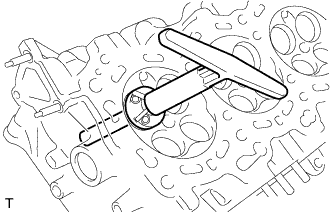
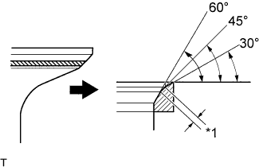
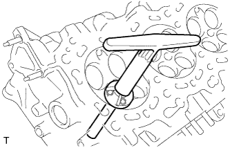
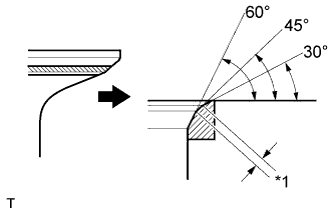

ГОЛОВКА БЛОКА ЦИЛИНДРОВ > РЕМОНТ |
| 1. ОТРЕМОНТИРУЙТЕ СЕДЛО ВПУСКНОГО КЛАПАНА |
|  |
Устройством для расточки седел с углом заточки 45° обработайте поверхность седла клапана так, чтобы ширина седла превышала требуемое значение.
|  |
Используя резаки с углом заточки 30° и 60°, подправьте седло клапана так, чтобы клапан касался седла по всему периметру. Касание должно осуществляться в центре седла впускного клапана, а ширина седла впускного клапана должна соответствовать указанному диапазону по всему его периметру.
| *1 | Ширина |
Вручную с помощью шлифовальной пасты притрите впускной клапан и его седло.
Проверьте положение седла впускного клапана.
| 2. ОТРЕМОНТИРУЙТЕ СЕДЛО ВЫПУСКНОГО КЛАПАНА |
|  |
Устройством для расточки седел с углом заточки 45° обработайте поверхность седла клапана так, чтобы ширина седла превышала требуемое значение.
|  |
Резаками с углами заточки 30° и 60° подправьте седло выпускного клапана так, чтобы выпускной клапан касался седла по всему периметру. Касание должно осуществляться в центре седла выпускного клапана, а ширина седла выпускного клапана должна соответствовать указанному диапазону по всему его периметру.
| *1 | Ширина |
Вручную с помощью шлифовальной пасты притрите выпускной клапан и его седло.
Проверьте положение седла выпускного клапана.